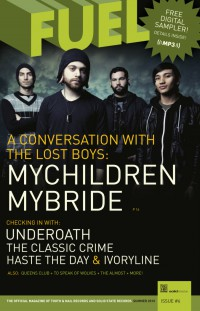

CMnexus
:
Contemporary Christian culture, music, and media.
Magazines
Profiles
Dove Awards
cmnexus.org
CM
nexus
→
Magazine list
→
FUEL
→
Issues
FUEL
, Sum 2010, #6
< -- Prev
Issue list
Next -- >
Cover

MyChildren MyBride
Featurette:
Poema
The Classic Crime
The Showdown
The Almost
Underoath
Sent by Ravens
MyChildren MyBride
Write This Down
Ivoryline
Haste the Day
Secret and Whisper
Queens Club
To Speak of Wolves
Children 18:3
< -- Prev
Issue list
Next -- >
CMnexus
(noun)
The magazine index
of modern music
and Christianity
© 2011 CMnexus. Last updated April 2021.
Contact:
Rants and other correspondence to:
editor -AT- cmnexus
-DØT- org
About